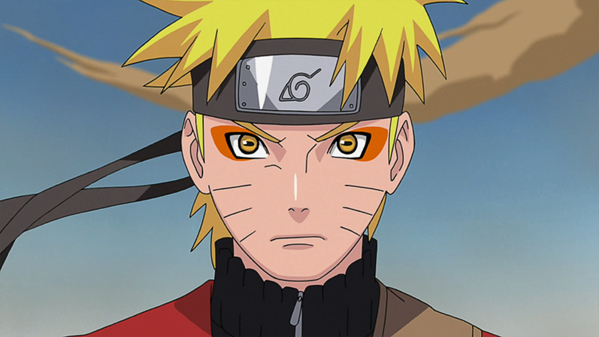

About Naruto
Naruto is a animated character from the hidden leaf village. He has the nine tailed fox stored awayed in himself to protect the village. He is truly the most poerful being in the show.
Naruto and his friends
Naruto's characteristics
- He beats up villians
- He makes friends evrywhere he goes
- Hu really likes helping other people
Naruto's Friends
At first Naruto did no thave many friends but he later was able to develop multiple relationships with the people around him and in other villages. Click on the links below to read abouth them